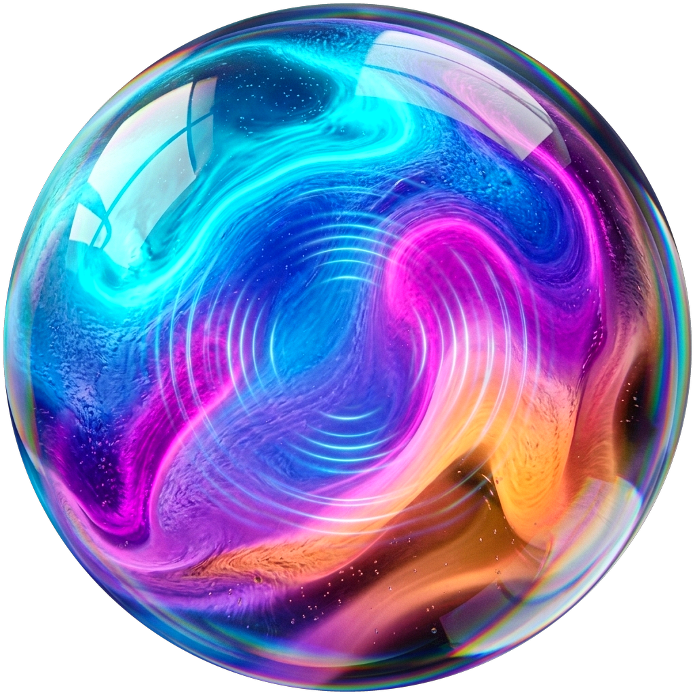

Switch between the top open-source projects below to see their exact on-screen presence & interaction design.

A black horizontal pill with live soundwave equalizer bars that drops down 20px from the camera notch whenever you trigger voice chat. Disappears completely when finished.